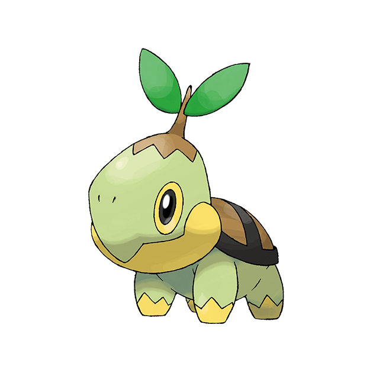
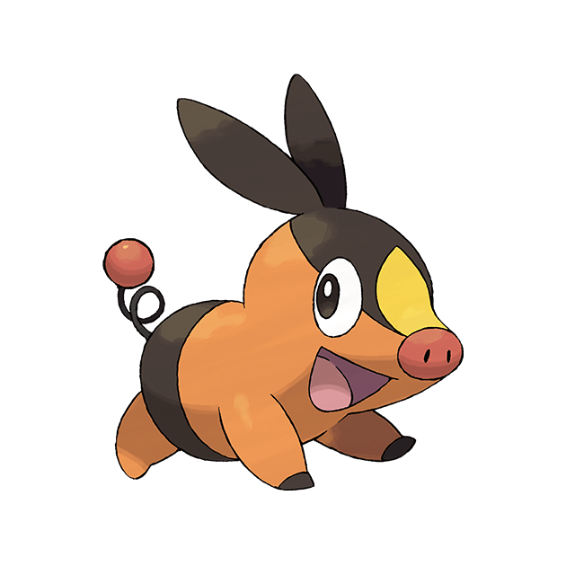
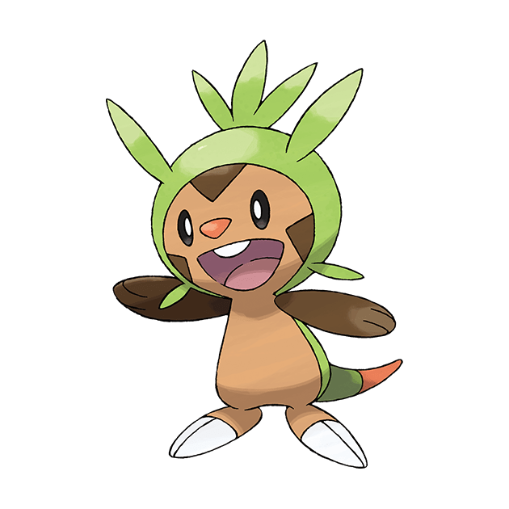
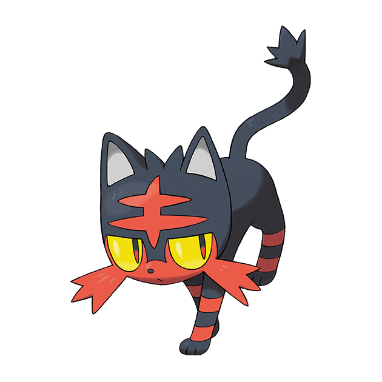
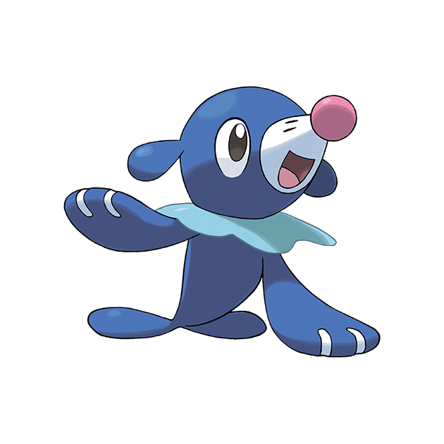
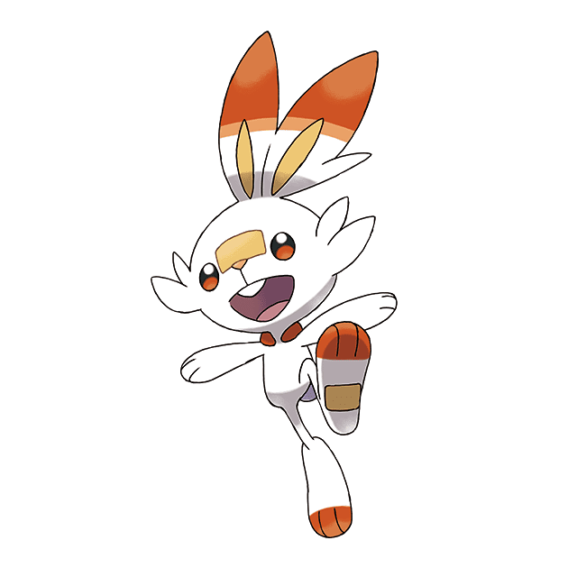

-
Bulbasaur #001

- Grama
- Veneno
Pode ser visto cochilando sob a luz do sol. Há uma semente em suas costas. Ao absorver os raios do sol, a semente cresce progressivamente.
-
Charmander #004

- Fogo
Tem preferência por coisas quentes. Quando chove, diz-se que o vapor jorra da ponta de sua cauda.
-
Squirtle #007

- Àgua
A concha de Squirtle não é usada apenas para proteção. A forma arredondada da concha e os sulcos em sua superfície ajudam a minimizar a resistência na água, permitindo que este Pokémon nade em alta velocidade.
-
Chikorita #151

- Grama
Na batalha, Chikorita balança sua folha para manter o inimigo afastado. No entanto, uma doce fragrância também exala da folha, acalmando o Pokémon batalhador e criando uma atmosfera acolhedora e amigável ao redor.
-
Cyndaquil #154

- Fogo
Cyndaquil se protege acendendo as chamas em suas costas. As chamas são vigorosas se o Pokémon estiver com raiva. No entanto, se estiver cansado, as chamas crepitam intermitentemente com combustão incompleta.
-
Totodile #157

- Agua
Apesar da pequenez de seu corpo, as mandíbulas do Totodile são muito poderosas. Embora o Pokémon possa pensar que está apenas mordendo de brincadeira, sua mordida tem poder suficiente para causar ferimentos graves.
-
Treecko #251

- Grama
Treecko tem pequenos ganchos na sola dos pés que lhe permitem escalar paredes verticais. Este Pokémon ataca batendo nos inimigos com sua cauda grossa.
-
Torchic #254

- Fogo
Torchic fica com seu treinador, seguindo atrás com passos instáveis. Este Pokémon exala fogo de mais de 1.800 graus Fahrenheit, incluindo bolas de fogo que deixam o inimigo chamuscado em preto..
-
Mudkip #257

- Àgua
A barbatana na cabeça de Mudkip funciona como um radar altamente sensível. Usando esta nadadeira para sentir os movimentos da água e do ar, este Pokémon pode determinar o que está acontecendo ao seu redor sem usar seus olhos.
-
Turtwig #386
- Grama
A fotossíntese ocorre em seu corpo sob o sol. A casca nas costas é, na verdade, solo endurecido.
-
Chimchar #389

- Fogo
Sua traseira ardente é alimentada pelo gás produzido em sua barriga. Nem a chuva pode extinguir o fogo.
-
Piplup #393

- Àgua
Não gosta de ser cuidado. É difícil criar um vínculo, já que ele não ouve seu treinador.
-
Snivy #495

- Grama
A exposição à luz solar torna seus movimentos mais rápidos. Ele usa videiras com mais habilidade do que suas mãos.
-
Tepig #498
- Fogo
Ele pode esquivar habilmente dos ataques de seu inimigo enquanto atira bolas de fogo de seu nariz. Ele assa as bagas antes de comê-las.
-
Oshawott #501
- Àgua
O scalchop em seu estômago não é usado apenas para a batalha - ele também pode ser usado para abrir frutas duras.
-
Chespin #650
- Grama
Os espinhos em sua cabeça geralmente são macios. Quando os flexiona, as pontas se tornam tão duras e afiadas que podem perfurar a rocha.
-
Fennekin #653

- Fogo
Comer um galho o enche de energia, e suas orelhas espaçosas dão vazão ao ar mais quente do que 390 graus Fahrenheit.
-
Froakie #655

- Àgua
It secretes flexible bubbles from its chest and back. The bubbles reduce the damage it would otherwisetake when attacked.
-
Rowlet #722

- Grama
Ele envia suas penas, que são afiadas como lâminas, voando em ataque. Suas pernas são fortes, então seus chutes também são formidáveis.
-
Litten #725
- Fogo
Se você se esforçar muito para se aproximar dele, ele não se abrirá para você. Mesmo que você se aproxime, dar muito carinho ainda é um não-não.
-
Popplio #728
- Àgua
Os balões que infla com o nariz ficam cada vez maiores à medida que pratica dia após dia.
-
Grookey #810
- Grama
Quando usa seu bastão especial para dar um toque, as ondas sonoras produzidas levam energia revitalizante para as plantas e flores da área.
-
Scorbunny #813
- Fogo
Um aquecimento de corrida faz com que a energia do fogo percorra o corpo deste Pokémon. Assim que isso acontecer, ele estará pronto para lutar com força total.
-
Sobble #816
- Àgua
Quando assustado, este Pokémon chora. Suas lágrimas embalam o soco químico de 100 cebolas, e os atacantes não serão capazes de resistir ao choro.
-
Sprigatito #906
- Grama
Seu pelo fofo é semelhante em composição às plantas. Este Pokémon lava frequentemente o rosto para evitar que seque.
-
Fuecoco #909
- Fogo
Encontra-se em rochas quentes e usa o calor absorvido por suas escamas quadradas para criar energia de fogo.
-
Quaxly #912
- Àgua
Este Pokémon migrou para Paldea de terras distantes há muito tempo. O gel secretado por suas penas repele a água e a sujeira.